[1] 0.7415091 0.9849515 1.9714576mean(samples)[1] 1.232639PSYC 6019-A01 / PSYC 6022-A01 2025-09-11 | Lab 3
why do we like sims
The Central Limit Theorem (CLT) says that the sampling distribution of the mean of any distribution with finite mean and variance will converge to be normal with increasing sample size.
○ Imagine: take a sample of \(N\) observations from the population, calculate some statistics (e.g., the mean), and toss them back.
○ Repeat a whole bunch of times
○ Sampling distribution: the distribution of those calculated statistics (e.g., means)
Let’s say we’re not so sure, and we want to test this out with different distributions and sample sizes \(N\).
Before simulating, define your goals / questions.
Does the sampling distribution of the mean really converge to normal for wonky asymmetrical distributions like the \(\chi^2\) distribution?
At what sample sizes does this fail?
See if the distribution of means from repeatedly sampling data looks normal
○ Does this change with different original distributions from which the data is drawn?
○ Does this change with sample size?
Then, sketch out a plan. Try to build things up step-by-step, not all at once.
Start with data sampled from a normal distribution. Generate one sample of data, take its mean.
Repeat this process multiple times, generating replications of data samples and sample means.
Visualize both: the original distribution of the data (sample distribution), the distribution of the the samples’ means (sampling distribution).
Incorporate different distributions.
Incorporate different sample sizes.
rnorm(x, mean, sd) where x is the number of samples
A tibble() is just like a dataframe, but better. The best part is its printing—tibble()s will never crowd your screen by trying to show every single value of a dataframe. Also, they work better with making tibbles in tibbles in tibbles… More on tibbles here.
Let’s specify the sample size and how many replications we want. Start small!
n_reps <- 2
sample_size <- 3
# total number of simulated draws
total_n <- n_reps * sample_sizeWe can then draw n_reps * sample_size = total_n values from a normal distribution with rnorm().
# A tibble: 6 × 3
rep index draw
<int> <int> <dbl>
1 1 1 1.04
2 1 2 0.334
3 1 3 1.12
4 2 1 0.966
5 2 2 0.372
6 2 3 1.05 And, we can plot those draws (getting a head start on #3).
sim_data |>
ggplot(aes(x = draw)) +
geom_density()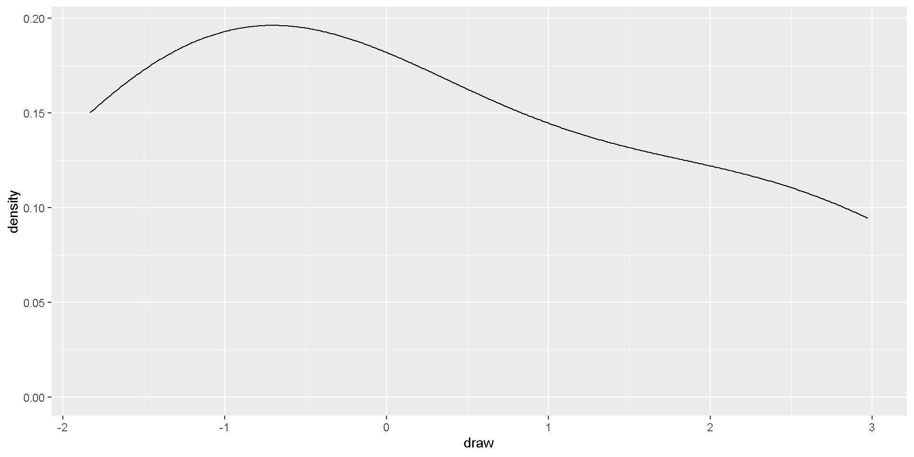
Repeat this process multiple times, generating replications of data samples and sample means.
Visualize both: the original distribution of the data (sample distribution), the distribution of the the samples’ means (sampling distribution).
Let’ finish out #2 by summarize()ing our sim_data into one sample mean per replication.
And, we can plot those draws (getting a head start on #4).
means |>
ggplot(aes(x = sample_mean)) +
geom_density()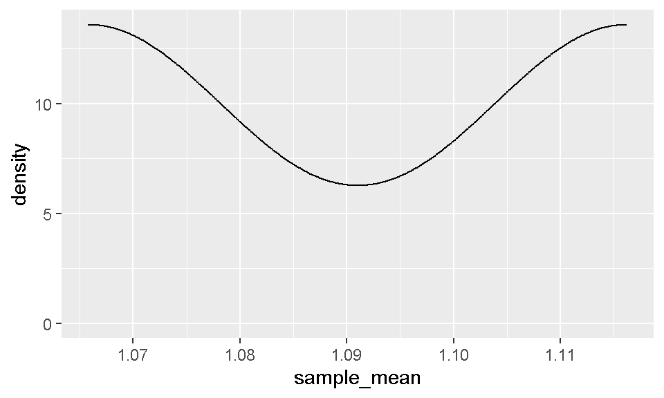
Before we start incorporating other conditions, let’s scale this up.
We can then draw n_reps * sample_size = total_n values from a normal distribution with rnorm().
# A tibble: 10,000 × 3
rep index draw
<int> <int> <dbl>
1 1 1 0.646
2 1 2 0.0863
3 1 3 0.955
4 1 4 0.613
5 1 5 1.18
6 1 6 0.370
7 1 7 1.43
8 1 8 1.43
9 1 9 0.946
10 1 10 0.984
# ℹ 9,990 more rowsPlotting both the sample distribution and sampling distributions…
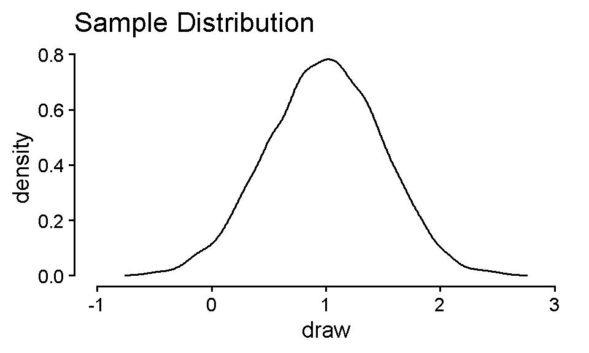
sim_data |>
ggplot(aes(x = draw)) +
geom_density() +
theme_classic(base_size = 14) +
coord_cartesian(xlim = c(-1, 3)) +
guides(x = guide_axis(cap = T),
y = guide_axis(cap = T),
color = guide_none()) +
labs(title = "Sample Distribution")means |>
ggplot(aes(x = sample_mean)) +
geom_density() +
theme_classic(base_size = 14) +
coord_cartesian(xlim = c(-1, 3)) +
guides(x = guide_axis(cap = T),
y = guide_axis(cap = T),
color = guide_none()) +
labs(title = "Sampling Distribution")runif(x, min, max) where all values between min and max have an equal chance of being sampled
uniform_samples <- runif(5, min = -1, max = 3)
uniform_samples[1] 1.0334694 1.1152769 1.5193658 0.4510833 -0.7252848rchisq(x, df) where df is the degrees of freedom for the distribution
chisquared_samples <- rchisq(5, df = 1)
chisquared_samples[1] 0.259325133 4.124289341 0.711930111 1.498284599 0.001220352Incorporate different distributions.
n_reps <- 1000
sample_size <- 10
total_n <- n_reps * sample_size
sim_data <- tibble(
n_reps = n_reps,
sample_size = sample_size
) |>
uncount(n_reps, .id = "rep") |>
uncount(sample_size, .id = "index") |>
mutate(
draw_normal = rnorm(total_n, mean = 1, sd = 0.5),
draw_uniform = runif(total_n, min = -1, max = 3),
draw_chisquared = rchisq(total_n, df = 1)
)
sim_data# A tibble: 10,000 × 5
rep index draw_normal draw_uniform draw_chisquared
<int> <int> <dbl> <dbl> <dbl>
1 1 1 0.319 -0.620 0.210
2 1 2 0.709 1.93 1.16
3 1 3 1.15 -0.914 0.223
4 1 4 1.00 1.02 0.278
5 1 5 0.735 1.49 2.62
6 1 6 1.70 1.27 1.14
7 1 7 0.489 0.849 2.11
8 1 8 0.581 2.25 3.31
9 1 9 0.896 -0.0928 0.0267
10 1 10 1.28 1.91 1.01
# ℹ 9,990 more rowsWe want to plot these draws as distributions, but facet_wrap(~ grouping_var) or aes(fill / color) are all expecting the values to be in one column, and a grouping variable that distinguishes them in another column.
# A tibble: 6 × 2
grouping_var y
<chr> <dbl>
1 group_1 -0.2
2 group_2 2.4
3 group_1 -1.5
4 group_2 0.4
5 group_1 -0.2
6 group_2 2.6What are the tidy principles?
Three rules to a tidy dataset
Each variable is a column; each column is a variable.
Each observation is a row; each row is an observation.
Each value is a cell; each cell is a single value.

Long: each observation is a row (tidy)
Wide: columns might represent different “values” of a variables
# A tibble: 9 × 3
person book score
<chr> <chr> <int>
1 Harry book 1 1
2 Harry book 2 3
3 Harry book 3 1
4 Ron book 1 3
5 Ron book 2 2
6 Ron book 3 3
7 Hermione book 1 2
8 Hermione book 2 2
9 Hermione book 3 1# A tibble: 3 × 4
person `book 1` `book 2` `book 3`
<chr> <int> <int> <int>
1 Harry 1 3 1
2 Ron 3 2 3
3 Hermione 2 2 1Wide data common in spreadsheets, data from survey platforms
Long data typically easier to work with
longdat <- dat %>%
pivot_longer(cols = c("book 1", "book 2", "book 3"),
names_to = "book", values_to = "score")
longdat# A tibble: 9 × 3
person book score
<chr> <chr> <int>
1 Harry book 1 1
2 Harry book 2 3
3 Harry book 3 1
4 Ron book 1 3
5 Ron book 2 2
6 Ron book 3 3
7 Hermione book 1 2
8 Hermione book 2 2
9 Hermione book 3 1widedat <- longdat %>%
pivot_wider(names_from = book, values_from = score)
widedat# A tibble: 3 × 4
person `book 1` `book 2` `book 3`
<chr> <int> <int> <int>
1 Harry 1 3 1
2 Ron 3 2 3
3 Hermione 2 2 1cols = set of columns to pivot
names_to = name of new column with the column names from before
values_to = name of new column with the values from before
names_from = column with values to be column names
values_from = column with values to be in those columns
Sometimes, we want to select many columns (to pivot, to remove, etc.)
Notice the documentation for pivot_longer()
<tidy-select> functions
starts_with() and ends_with()
Simple example, but…
dat |>
pivot_longer(cols = starts_with("q"),
names_to = "question", values_to = "correct")# A tibble: 25 × 3
id question correct
<int> <chr> <int>
1 1 q1 0
2 1 q2 0
3 1 q3 0
4 1 q4 1
5 1 q5 1
6 2 q1 1
7 2 q2 0
8 2 q3 0
9 2 q4 0
10 2 q5 1
# ℹ 15 more rowsNow, back to our simulation.
n_reps <- 1000
sample_size <- 10
total_n <- n_reps * sample_size
sim_data <- tibble(
n_reps = n_reps,
sample_size = sample_size
) |>
uncount(n_reps, .id = "rep") |>
uncount(sample_size, .id = "index") |>
mutate(
draw_normal = rnorm(total_n, mean = 1, sd = 0.5),
draw_uniform = runif(total_n, min = -1, max = 3),
draw_chisquared = rchisq(total_n, df = 1)
)
sim_data# A tibble: 10,000 × 5
rep index draw_normal draw_uniform draw_chisquared
<int> <int> <dbl> <dbl> <dbl>
1 1 1 0.153 2.63 0.266
2 1 2 0.352 2.05 3.20
3 1 3 1.47 -0.208 0.00775
4 1 4 1.96 0.962 0.498
5 1 5 0.734 1.89 0.000134
6 1 6 1.14 -0.280 3.72
7 1 7 1.32 0.983 2.44
8 1 8 1.02 2.78 0.00446
9 1 9 1.64 -0.756 2.58
10 1 10 1.73 -0.0455 0.225
# ℹ 9,990 more rowssim_data |>
pivot_longer(starts_with("draw"),
names_to = "distribution", values_to = "draw")# A tibble: 30,000 × 4
rep index distribution draw
<int> <int> <chr> <dbl>
1 1 1 draw_normal 0.153
2 1 1 draw_uniform 2.63
3 1 1 draw_chisquared 0.266
4 1 2 draw_normal 0.352
5 1 2 draw_uniform 2.05
6 1 2 draw_chisquared 3.20
7 1 3 draw_normal 1.47
8 1 3 draw_uniform -0.208
9 1 3 draw_chisquared 0.00775
10 1 4 draw_normal 1.96
# ℹ 29,990 more rowsWe can then draw n_reps * sample_size = total_n values from a normal distribution with rnorm().
n_reps <- 1000
sample_size <- 10
total_n <- n_reps * sample_size
sim_data <- tibble(
n_reps = n_reps,
sample_size = sample_size
) |>
uncount(n_reps, .id = "rep") |>
uncount(sample_size, .id = "index") |>
mutate(
draw_normal = rnorm(total_n, mean = 1, sd = 0.5),
draw_uniform = runif(total_n, min = -1, max = 3),
draw_chisquared = rchisq(total_n, df = 1)
) |>
pivot_longer(starts_with("draw"),
names_to = "distribution", values_to = "draw")
sim_data# A tibble: 30,000 × 4
rep index distribution draw
<int> <int> <chr> <dbl>
1 1 1 draw_normal 1.69
2 1 1 draw_uniform -0.183
3 1 1 draw_chisquared 2.96
4 1 2 draw_normal 1.22
5 1 2 draw_uniform 2.23
6 1 2 draw_chisquared 0.299
7 1 3 draw_normal -0.0234
8 1 3 draw_uniform -0.439
9 1 3 draw_chisquared 0.202
10 1 4 draw_normal 0.634
# ℹ 29,990 more rowsAnd grab their means.
# A tibble: 3,000 × 3
rep distribution sample_mean
<int> <chr> <dbl>
1 1 draw_normal 0.927
2 1 draw_uniform 1.18
3 1 draw_chisquared 2.08
4 2 draw_normal 0.754
5 2 draw_uniform 1.00
6 2 draw_chisquared 1.22
7 3 draw_normal 0.850
8 3 draw_uniform 1.38
9 3 draw_chisquared 0.838
10 4 draw_normal 1.29
# ℹ 2,990 more rowsPlotting both the sample distribution and sampling distributions…
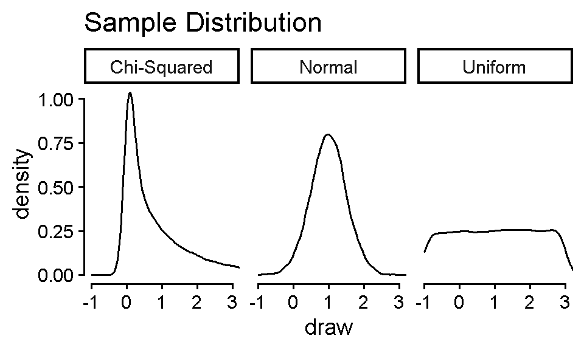
distribution_labels = c(
"draw_normal" = "Normal",
"draw_uniform" = "Uniform",
"draw_chisquared" = "Chi-Squared"
)
sim_data |>
ggplot(aes(x = draw)) +
geom_density() +
theme_classic(base_size = 14) +
coord_cartesian(xlim = c(-1, 3)) +
facet_wrap(~ distribution, labeller = as_labeller(distribution_labels)) +
guides(x = guide_axis(cap = T),
y = guide_axis(cap = T),
color = guide_none()) +
labs(title = "Sample Distribution")means |>
ggplot(aes(x = sample_mean)) +
geom_density() +
theme_classic(base_size = 14) +
coord_cartesian(xlim = c(-1, 3)) +
facet_wrap(~ distribution, labeller = as_labeller(distribution_labels)) +
guides(x = guide_axis(cap = T),
y = guide_axis(cap = T),
color = guide_none()) +
labs(title = "Sampling Distribution")We can expand sample_size to be a vector of desired sample sizes
Because n_reps is length one, it will be “recycled” (repeated) to match the length of sample_size
For more complicated designs, we might have to use an expand() function
Let’s say we also wanted to vary n_reps
# A tibble: 2 × 2
n_reps sample_size
<dbl> <dbl>
1 100 1
2 1000 3tibble(n_reps = n_reps) |>
expand_grid(sample_size = sample_size)# A tibble: 4 × 2
n_reps sample_size
<dbl> <dbl>
1 100 1
2 100 3
3 1000 1
4 1000 3# A tibble: 12 × 3
sample_size rep sample_id
<dbl> <int> <int>
1 1 1 1
2 1 2 1
3 1 3 1
4 3 1 1
5 3 1 2
6 3 1 3
7 3 2 1
8 3 2 2
9 3 2 3
10 3 3 1
11 3 3 2
12 3 3 3n_reps <- 1000
sample_size <- c(3, 10, 30, 100)
total_n <- sum(n_reps * sample_size)
sim_data <- tibble(
n_reps = n_reps,
sample_size = sample_size
) |>
uncount(n_reps, .id = "rep") |>
uncount(sample_size, .id = "index", .remove = F) |>
mutate(
draw_normal = rnorm(total_n, mean = 1, sd = 0.5),
draw_uniform = runif(total_n, min = -1, max = 3),
draw_chisquared = rchisq(total_n, df = 1)
) |>
pivot_longer(starts_with("draw"),
names_to = "distribution", values_to = "draw")
sim_data# A tibble: 429,000 × 5
sample_size rep index distribution draw
<dbl> <int> <int> <chr> <dbl>
1 3 1 1 draw_normal 1.48
2 3 1 1 draw_uniform -0.429
3 3 1 1 draw_chisquared 0.0650
4 3 1 2 draw_normal 1.35
5 3 1 2 draw_uniform -0.916
6 3 1 2 draw_chisquared 3.63
7 3 1 3 draw_normal 0.846
8 3 1 3 draw_uniform 0.599
9 3 1 3 draw_chisquared 0.00629
10 3 2 1 draw_normal 0.664
# ℹ 428,990 more rows# A tibble: 12,000 × 4
rep distribution sample_size sample_mean
<int> <chr> <dbl> <dbl>
1 1 draw_normal 3 1.23
2 1 draw_uniform 3 -0.248
3 1 draw_chisquared 3 1.23
4 2 draw_normal 3 1.01
5 2 draw_uniform 3 0.196
6 2 draw_chisquared 3 0.436
7 3 draw_normal 3 0.923
8 3 draw_uniform 3 0.790
9 3 draw_chisquared 3 0.715
10 4 draw_normal 3 0.982
# ℹ 11,990 more rowsNow, let’s think about how we want to visualize these results. We now have two condition variables (sample_size and distribution). We need to plot in a way that distinguishes both factors.
facet_grid()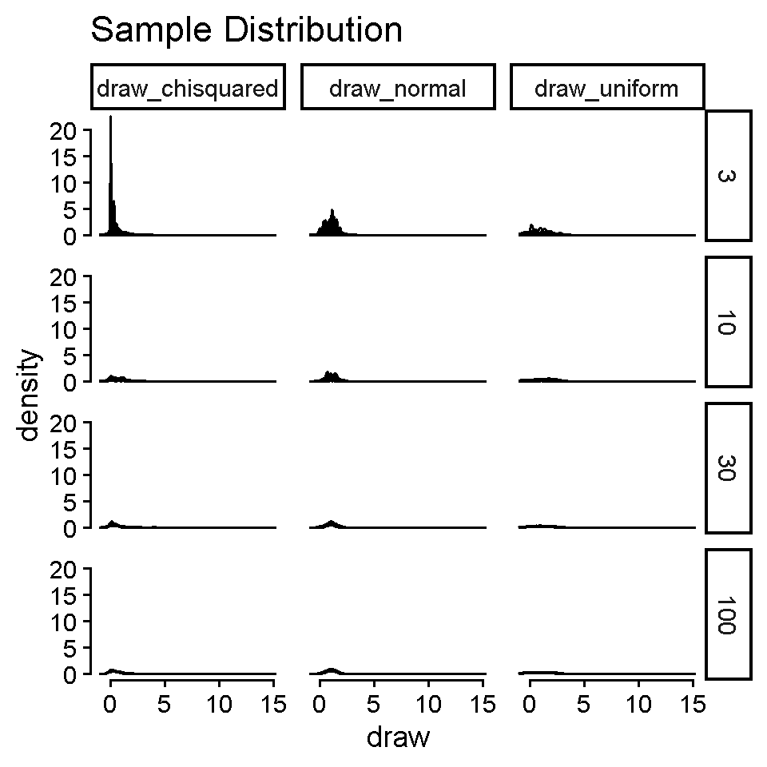
sim_data |>
filter(rep %in% sample(n_reps, size = 30)) |>
ggplot(aes(x = draw, group = interaction(distribution, rep))) +
geom_density() +
theme_classic(base_size = 14) +
guides(x = guide_axis(cap = T),
y = guide_axis(cap = T),
color = guide_none()) +
facet_grid(sample_size ~ distribution) +
labs(title = "Sample Distribution"){ggridges}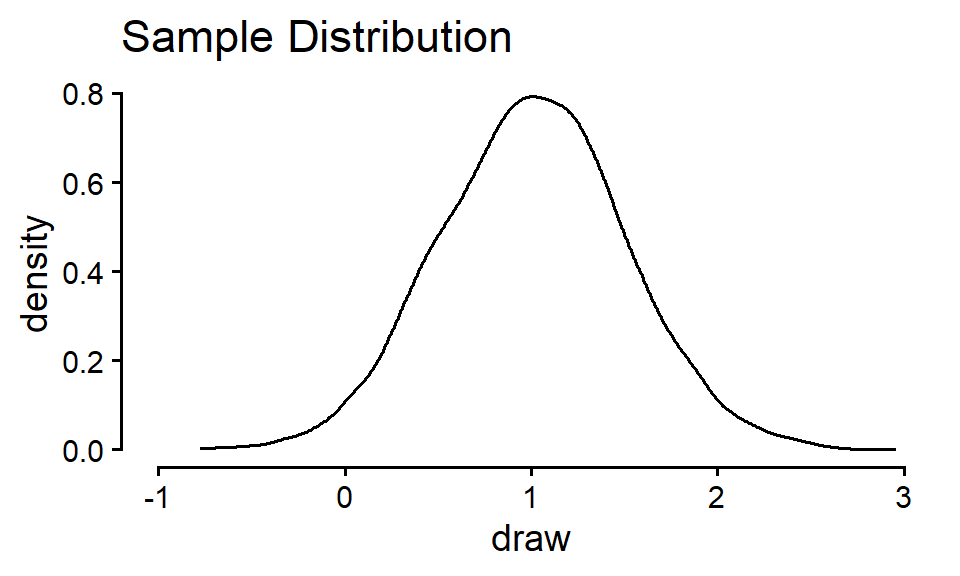
# install.packages("ggridges")
sim_data |>
filter(rep %in% sample(n_reps, size = 30)) |>
ggplot(aes(x = draw, y = distribution,
color = distribution, group = interaction(distribution, rep))) +
ggridges::geom_density_ridges(alpha = 0.8, fill = NA) +
theme_classic(base_size = 14) +
guides(x = guide_axis(cap = T),
y = guide_axis(cap = T),
color = guide_none()) +
facet_wrap(~ sample_size) +
labs(title = "Sample Distribution")facet_grid()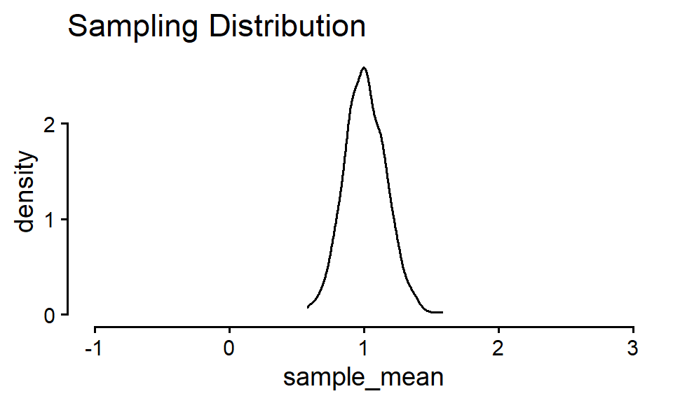
means |>
ggplot(aes(x = sample_mean)) +
geom_density() +
theme_classic(base_size = 14) +
guides(x = guide_axis(cap = T),
y = guide_axis(cap = T),
color = guide_none()) +
facet_grid(sample_size ~ distribution, scales = "free_y") +
labs(title = "Samplng Distribution"){ggridges}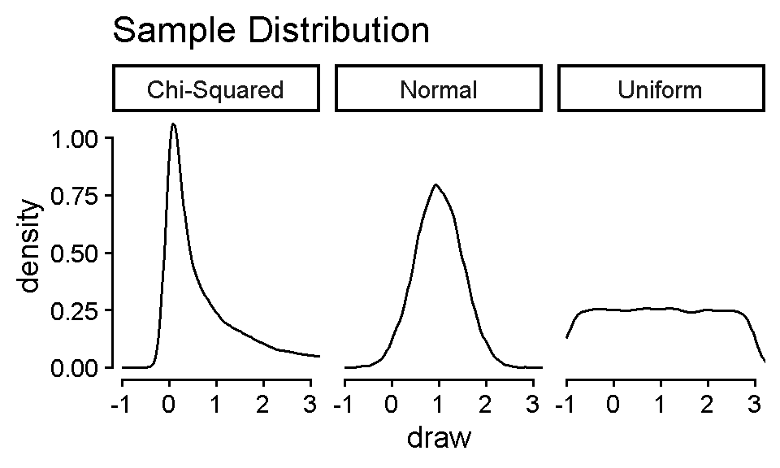
# install.packages("ggridges")
means |>
ggplot(aes(x = sample_mean, y = distribution, color = distribution)) +
ggridges::geom_density_ridges(alpha = 0.8, fill = NA) +
theme_classic(base_size = 14) +
guides(x = guide_axis(cap = T),
y = guide_axis(cap = T),
color = guide_none()) +
facet_wrap(~ sample_size) +
labs(title = "Sampling Distribution")Testing inferences about proportions
○ Involve categorical variables
Comparing observed frequencies (counts) to some expected (null hypothesis) frequencies
\(\chi^2\) Test of Goodness of Fit: expected frequencies are set by researcher (e.g., null hypothesis is equal frequencies across all groups)
\(\chi^2\) Test of Independence: expected frequencies are those implied by independence
Instead of a continuous variable, our outcome is a count
Continuous
Height
Petal length
Test score
Counts
Coin flip being heads
Number of pets
Goals scored
Only integers
Do the observed frequencies of a categorical variable differ from what expected a priori?
Typically, this expectation is equal occurrence across groups (but doesn’t have to be).
If equal occurrence, what would be our expected frequencies?
100 coin flips
| Heads | Tails |
|---|---|
| 50 | 50 |
Favorite primary color of 33 students
| Red | Blue | Yellow |
|---|---|---|
| 11 | 11 | 11 |
Can also hypothesize proportions and convert to frequencies once you have a sample size.
\(H_0\): Observed data match the expected frequencies for the population
\(H_1\): Observed data do not match the expected frequencies for the population
○ Observed frequency is significantly different than expected
\(H_0\): \(\pi_j = \pi_{j_0}\) for all categories \(j\) (i.e., difference for all categories is 0), where
\(\pi_j\) = observed proportion
\(\pi_{j_0}\) = expected proportion
\(H_1\): \(\pi_j \neq \pi_{j_0}\) for any category \(j\)
\[ \chi^2 = \sum_{j=1}^{J} \frac{(O_j – N\pi_{j_0})^2}{N\pi_{j_0}} = \sum_{j=1}^{J} \frac{(O_j – E_j)^2}{E_j} \]
where
\(O_j\) = observed frequency
\(N\) = total sample size
\(E_j\) = expected frequency
\(j\) = individual category out of \(J\) total categories
The sum of the squared differences between the observed and expected frequencies, divided by the expected frequency, for each group.
\(\text{df} = J - 1\), where
\(J\) = number of categories
Use to identify critical \(\chi^2\) value from \(\chi^2\) table, R, etc.
For \(\chi^2\), as \(\text{df}\) increases, so does the critical-\(\chi^2\) value (at same \(\alpha\))
Only ever a one-tailed test! For the upper end of the distribution.
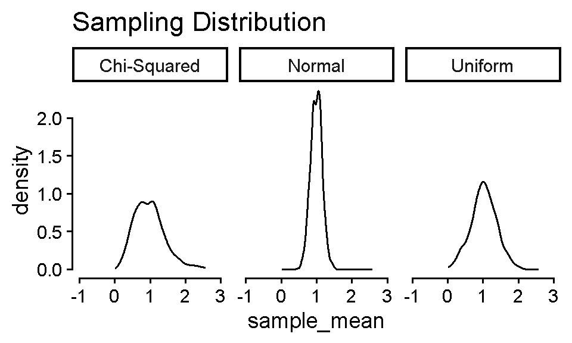
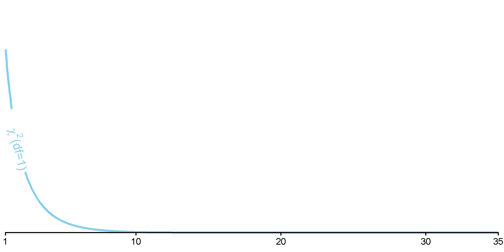
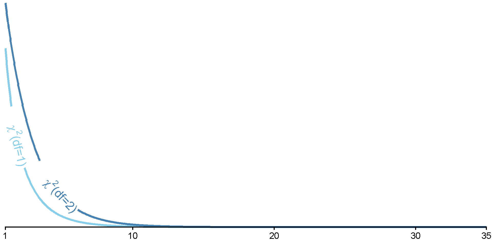
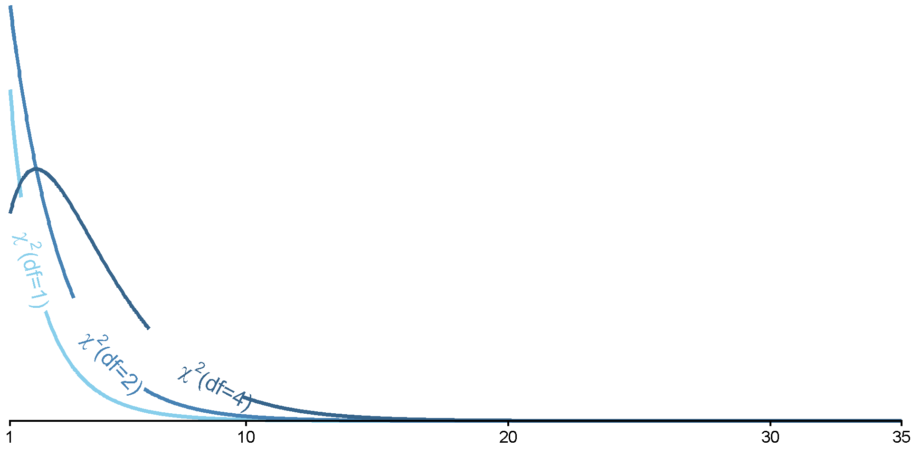
Cutoff for test of heads vs. tails
\(J =\) 2
\(\text{df} = J - 1 =\) 1
You are an education psychologist interested in college students’ choice of majors. You’ve grouped majors into five categories: STEM, Social Sciences, Humanities, Arts, and Business. You’d like to test whether there are differences in the population of students choosing those majors. You sample 100 students and ask what major they chose.
First, what are your expected frequencies for each category?
| STEM | Social Sciences | Humanities | Arts | Business | |
|---|---|---|---|---|---|
| Expected | |||||
| Observed |
You are an education psychologist interested in college students’ choice of majors. You’ve grouped majors into five categories: STEM, Social Sciences, Humanities, Arts, and Business. You’d like to test whether there are differences in the population of students choosing those majors. You sample 100 students and ask what major they chose.
First, what are your expected frequencies for each category?
| STEM | Social Sciences | Humanities | Arts | Business | |
|---|---|---|---|---|---|
| Expected | 20 | 20 | 20 | 20 | 20 |
| Observed |
You are an education psychologist interested in college students’ choice of majors. You’ve grouped majors into five categories: STEM, Social Sciences, Humanities, Arts, and Business. You’d like to test whether there are differences in the population of students choosing those majors. You sample 100 students and ask what major they chose.
Next, what is your \(\chi^2\) cutoff value?
| STEM | Social Sciences | Humanities | Arts | Business | |
|---|---|---|---|---|---|
| Expected | 20 | 20 | 20 | 20 | 20 |
| Observed |
Cutoff in R
df <- 5 - 1
chisq_crit <- qchisq(.95, df)
chisq_crit[1] 9.487729You are an education psychologist interested in college students’ choice of majors. You’ve grouped majors into five categories: STEM, Social Sciences, Humanities, Arts, and Business. You’d like to test whether there are differences in the population of students choosing those majors. You sample 100 students and ask what major they chose.
Here are the observed values:
| STEM | Social Sciences | Humanities | Arts | Business | |
|---|---|---|---|---|---|
| Expected | 20 | 20 | 20 | 20 | 20 |
| Observed | 65 | 10 | 5 | 5 | 15 |
\[ \chi^2 = \sum_{j=0}^{J} \frac{(O_j – N\pi_j)^2}{N\pi_j} = \sum_{j=0}^{J} \frac{(O_j – E_j)^2}{E_j} \]
obs_chisq <- (65 - 20)^2 / 20 +
(10 - 20)^2 / 20 +
(5 - 20)^2 / 20 +
(5 - 20)^2 / 20 +
(15 - 20)^2 / 20
obs_chisq[1] 130obs_chisq > chisq_crit[1] TRUEWe can reject the null in favor of the alternative that the number of students is not the same across majors.
admissions_data <- read.csv(here::here("lab", "data", "gatech_admissions.csv"))
admissions_data_2025 <- admissions_data |>
filter(year == 2025)
chisq <- admissions_data_2025 |>
select(applied) |>
chisq.test()
chisq
Chi-squared test for given probabilities
data: select(admissions_data_2025, applied)
X-squared = 61919, df = 5, p-value < 2.2e-16chisq$expected[1] 10994.67 10994.67 10994.67 10994.67 10994.67 10994.67chisq$statisticX-squared
61919.01 chisq$p.value[1] 0Let’s restart and say that you were a educational psychologist interested in how students in STEM schools choose their major. In this situation, you had expected more students to select a STEM major than other majors.
These are your new expected frequencies (60% STEM, evenly divided across the rest):
| STEM | Social Sciences | Humanities | Arts | Business | |
|---|---|---|---|---|---|
| Expected | 60 | 10 | 10 | 10 | 10 |
| Observed | 65 | 10 | 5 | 5 | 15 |
chisq.test(x = c(65, 10, 5, 5, 15),
p = c(60, 10, 10, 10, 10),
rescale.p = T)
Chi-squared test for given probabilities
data: c(65, 10, 5, 5, 15)
X-squared = 7.9167, df = 4, p-value = 0.09468chisq.test(x = c(65, 10, 5, 5, 15),
p = c(.60, .10, .10, .10, .10))
Chi-squared test for given probabilities
data: c(65, 10, 5, 5, 15)
X-squared = 7.9167, df = 4, p-value = 0.09468○ x = data of frequencies
○ p = expected probabilities
○ rescale.p = [T/F], will rescale p to probabilities if you prefer to input frequencies
Do the observed frequencies of a categorical variable differ from what expected via properties of independence?
○ Now considering more than one type of category
○ E.g., Number of pets by cat vs. dog people and undergrad vs. post-graduate
| Cat Person | Dog Person | |
|---|---|---|
| Undergrad | ||
| Post-Graduate |
Expected frequencies calculated from the marginal totals of the contingency table
○ Expected values determined from data
\(H_0\): Categorical Variable 1 and Categorical Variable 2 are independent (i.e., have no association)
\(H_1\): Categorical Variable 1 and Categorical Variable 2 are not independent (i.e., have some association)
○ Do expected frequencies match those expected via independence?
Mathematically the same as before:
\(H_0\): \(\pi_j = \pi_{j_0}\) for all categories \(j\); difference for all categories is 0, where
\(\pi_j\) = observed proportion
\(\pi_{j_0}\) = expected proportion
\(H_1\): \(\pi_j \neq \pi_{j_0}\) for any category \(j\)
Just changing the expected frequencies
\[ \chi^2 = \sum_{j_1=1}^{J_1}\sum_{j_2=1}^{J_2} \frac{(O_j – N\pi_{j_0})^2}{N\pi_{j_0}} = \sum_{j_1=1}^{J_1}\sum_{j_2=1}^{J_2} \frac{(O_j – E_j)^2}{E_j} \]
Basically identical formula to calculate the \(\chi^2\).
The difference is that our expected frequencies \(E_j\) are derived from the data. Just like before, we calculate the difference from each cell, but now we have two categories that make up the cell.
The sum of the squared differences between the observed and expected frequencies, divided by the expected frequency, for each cell.
What is the critical \(\chi^2\) value in a test of independence for a 3x2?
\(\text{df} = (J_1 - 1) \times (J_2 - 1)\) or
\(\text{df} = (n_{rows} - 1) \times (n_{cols} - 1)\)
You are another educational psychologist, and you’re interested in examining your department’s student body makeup. You wonder whether there is an association between students’ level (graduate vs. undergraduate) and whether they are an in-state student or not. You sample 50 students from your department, and these are the frequencies you observe.
| In-State | Out-of-State | |
|---|---|---|
| Undergrad | 25 | 10 |
| Graduate | 5 | 10 |
First, what are your expected frequencies for each category?
First, get the marginal totals for each column
| In-State | Out-of-State | Total | |
|---|---|---|---|
| Undergrad | 25 | 10 | |
| Graduate | 5 | 10 | |
| Total |
First, get the marginal totals for each column
| In-State | Out-of-State | Total | |
|---|---|---|---|
| Undergrad | 25 | 10 | 35 |
| Graduate | 5 | 10 | 15 |
| Total | 30 | 20 | 50 |
| In-State | Out-of-State | Total | |
|---|---|---|---|
| Undergrad | 25 | 10 | 35 |
| Graduate | 5 | 10 | 15 |
| Total | 30 | 20 | 50 |
| In-State | Out-of-State | Total | |
|---|---|---|---|
| Undergrad | 21 | 14 | 35 |
| Graduate | 9 | 6 | 15 |
| Total | 30 | 20 | 50 |
Expected cell frequency = \(E_j\) = \(\frac{\text{column total} \times \text{row total}}{N}\)
○ Undergrad & In-State = \(\frac{35 \times 30}{50} = 21\)
○ Undergrad & Out-of-State = \(\frac{35 \times 20}{50} = 14\)
○ Graduate & In-State = \(\frac{15 \times 30}{50} = 9\)
○ Graduate & Out-of-State = \(\frac{15 \times 20}{50} = 6\)
\[ \chi^2 = \sum_{j=0}^{J} \frac{(O_j – N\pi_j)^2}{N\pi_j} = \sum_{j=0}^{J} \frac{(O_j – E_j)^2}{E_j} \]
data.frame(type = c("Undergrad", "Graduate", "Total"),
`In-State` = c(25, 5, 30),
`Out-of-State` = c(10, 10, 20),
Total = c(35, 15, 50)) type In.State Out.of.State Total
1 Undergrad 25 10 35
2 Graduate 5 10 15
3 Total 30 20 50chisq_crit <- qchisq(.95, df = (2 - 1) * (2 - 1))
chisq_crit[1] 3.841459obs_chisq <- (25 - 21)^2 / 21 +
(10 - 14)^2 / 14 +
(5 - 9)^2 / 9 +
(10 - 6)^2 / 6
obs_chisq[1] 6.349206obs_chisq > chisq_crit[1] TRUEstuddat <- data.frame(type = c("Undergrad", "Graduate"),
`In-State` = c(25, 5),
`Out-of-State` = c(10, 10))
studdat |>
select(-type) |>
chisq.test(correct = F)
Pearson's Chi-squared test
data: select(studdat, -type)
X-squared = 6.3492, df = 1, p-value = 0.01174○ correct = [T/F], applies a “continuity correction” to the \(\chi^2\) value. Default is T. Change to F!
We can reject the null in favor of the alternative that students’ level (graduate vs. undergraduate) and whether they are an in-state student or not are not independent.
untallied_admissions_data |> head(12) year college student_id
1 2023 College of Computing 1
2 2023 College of Computing 2
3 2023 College of Computing 3
4 2023 College of Computing 4
5 2023 College of Computing 5
6 2023 College of Computing 6
7 2023 College of Computing 7
8 2023 College of Computing 8
9 2023 College of Computing 9
10 2023 College of Computing 10
11 2023 College of Computing 11
12 2023 College of Computing 12table()
Some ways to generate frequencies from categorical variables
table(untallied_admissions_data$college)
College of Computing College of Design
4108 882
College of Engineering College of Sciences
10949 4580
Ivan Allen College Scheller College of Business
1578 1488 table(untallied_admissions_data$college) |>
data.frame() Var1 Freq
1 College of Computing 4108
2 College of Design 882
3 College of Engineering 10949
4 College of Sciences 4580
5 Ivan Allen College 1578
6 Scheller College of Business 1488table()
table(untallied_admissions_data$college, untallied_admissions_data$year)
2023 2024 2025
College of Computing 1533 1265 1310
College of Design 287 282 313
College of Engineering 3584 3570 3795
College of Sciences 1532 1507 1541
Ivan Allen College 520 500 558
Scheller College of Business 464 513 511table(untallied_admissions_data$college, untallied_admissions_data$year) |>
data.frame() Var1 Var2 Freq
1 College of Computing 2023 1533
2 College of Design 2023 287
3 College of Engineering 2023 3584
4 College of Sciences 2023 1532
5 Ivan Allen College 2023 520
6 Scheller College of Business 2023 464
7 College of Computing 2024 1265
8 College of Design 2024 282
9 College of Engineering 2024 3570
10 College of Sciences 2024 1507
11 Ivan Allen College 2024 500
12 Scheller College of Business 2024 513
13 College of Computing 2025 1310
14 College of Design 2025 313
15 College of Engineering 2025 3795
16 College of Sciences 2025 1541
17 Ivan Allen College 2025 558
18 Scheller College of Business 2025 511summarize()
Some ways to generate frequencies from categorical variables
college year n
1 College of Computing 2023 1533
2 College of Design 2023 287
3 College of Engineering 2023 3584
4 College of Sciences 2023 1532
5 Ivan Allen College 2023 520
6 Scheller College of Business 2023 464
7 College of Computing 2024 1265
8 College of Design 2024 282
9 College of Engineering 2024 3570
10 College of Sciences 2024 1507
11 Ivan Allen College 2024 500
12 Scheller College of Business 2024 513
13 College of Computing 2025 1310
14 College of Design 2025 313
15 College of Engineering 2025 3795
16 College of Sciences 2025 1541
17 Ivan Allen College 2025 558
18 Scheller College of Business 2025 511 college year n
1 College of Computing 2023 1533
2 College of Computing 2024 1265
3 College of Computing 2025 1310
4 College of Design 2023 287
5 College of Design 2024 282
6 College of Design 2025 313
7 College of Engineering 2023 3584
8 College of Engineering 2024 3570
9 College of Engineering 2025 3795
10 College of Sciences 2023 1532
11 College of Sciences 2024 1507
12 College of Sciences 2025 1541
13 Ivan Allen College 2023 520
14 Ivan Allen College 2024 500
15 Ivan Allen College 2025 558
16 Scheller College of Business 2023 464
17 Scheller College of Business 2024 513
18 Scheller College of Business 2025 511count()
count(x, grouping_var1, grouping_var2, etc.)
○ x = dataframe
grouping_vars = variable names to group by
Basically shorthand for:
Also seems to arrange by default
count()
count(x, grouping_var1, grouping_var2, etc.)
○ x = dataframe
grouping_vars = variable names to group by
college year n
1 College of Computing 2023 1533
2 College of Design 2023 287
3 College of Engineering 2023 3584
4 College of Sciences 2023 1532
5 Ivan Allen College 2023 520
6 Scheller College of Business 2023 464
7 College of Computing 2024 1265
8 College of Design 2024 282
9 College of Engineering 2024 3570
10 College of Sciences 2024 1507
11 Ivan Allen College 2024 500
12 Scheller College of Business 2024 513
13 College of Computing 2025 1310
14 College of Design 2025 313
15 College of Engineering 2025 3795
16 College of Sciences 2025 1541
17 Ivan Allen College 2025 558
18 Scheller College of Business 2025 511untallied_admissions_data |>
count(college, year) college year n
1 College of Computing 2023 1533
2 College of Computing 2024 1265
3 College of Computing 2025 1310
4 College of Design 2023 287
5 College of Design 2024 282
6 College of Design 2025 313
7 College of Engineering 2023 3584
8 College of Engineering 2024 3570
9 College of Engineering 2025 3795
10 College of Sciences 2023 1532
11 College of Sciences 2024 1507
12 College of Sciences 2025 1541
13 Ivan Allen College 2023 520
14 Ivan Allen College 2024 500
15 Ivan Allen College 2025 558
16 Scheller College of Business 2023 464
17 Scheller College of Business 2024 513
18 Scheller College of Business 2025 511summarize()
If going to put into the chisq.test() function, want to pivot and get rid of additional columns.
Many ways to do this, but one example:
chisqdat <- untallied_admissions_data |>
count(college, year) |>
pivot_wider(names_from = college,
values_from = n) |>
select(-year)
chisqdat# A tibble: 3 × 6
`College of Computing` `College of Design` `College of Engineering`
<int> <int> <int>
1 1533 287 3584
2 1265 282 3570
3 1310 313 3795
# ℹ 3 more variables: `College of Sciences` <int>, `Ivan Allen College` <int>,
# `Scheller College of Business` <int>chisq.test(chisqdat)
Pearson's Chi-squared test
data: chisqdat
X-squared = 36.938, df = 10, p-value = 5.801e-05chisq.test(chisqdat, correct = F)
Pearson's Chi-squared test
data: chisqdat
X-squared = 36.938, df = 10, p-value = 5.801e-05geom_bar()
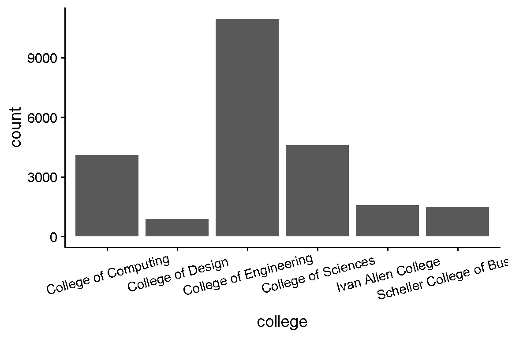
untallied_admissions_data |>
ggplot(aes(x = college)) +
geom_bar() +
theme_classic(base_size = 14) +
theme(axis.text.x = element_text(angle = 15, vjust = .7))geom_bar()
geom_bar()